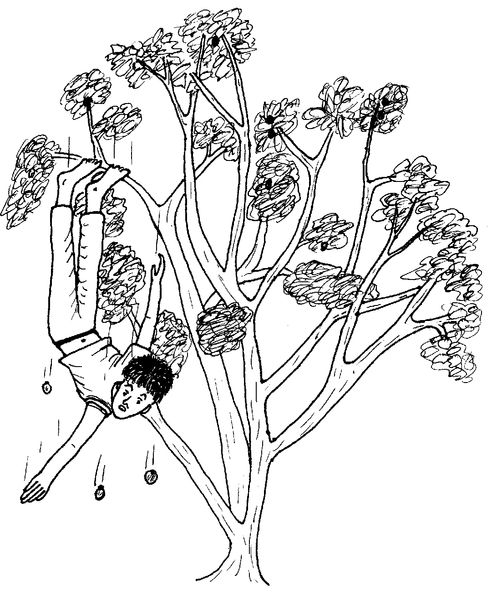
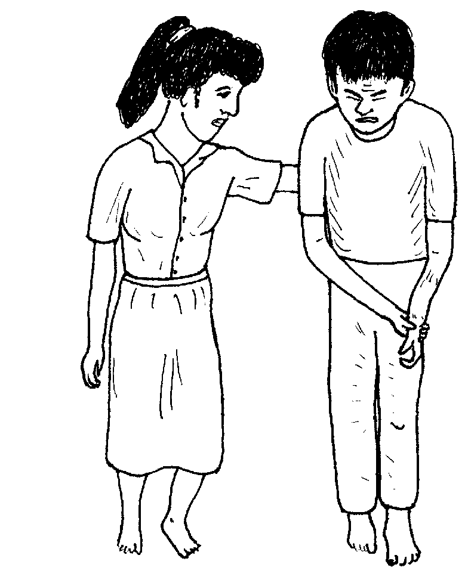
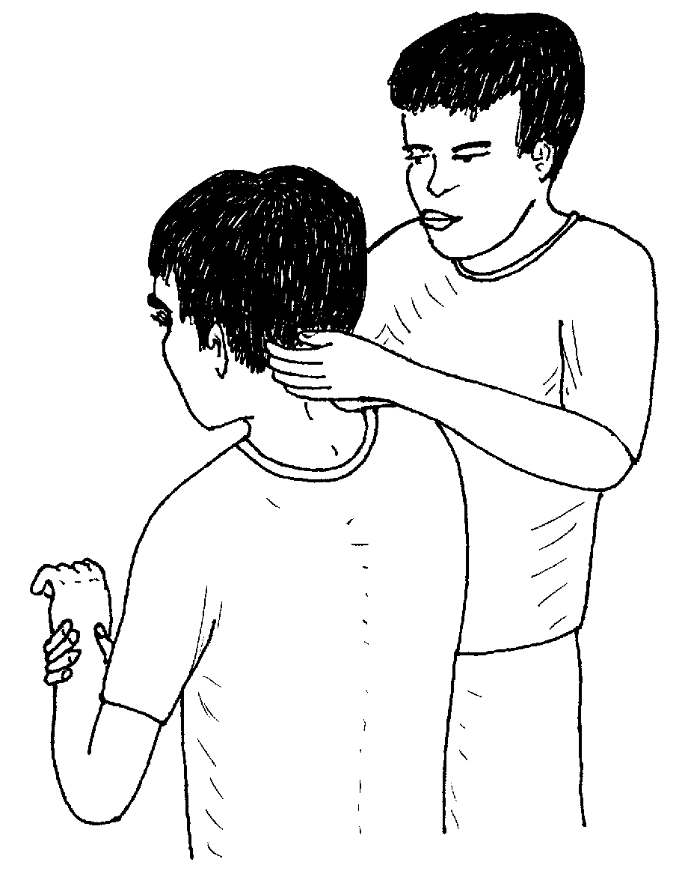
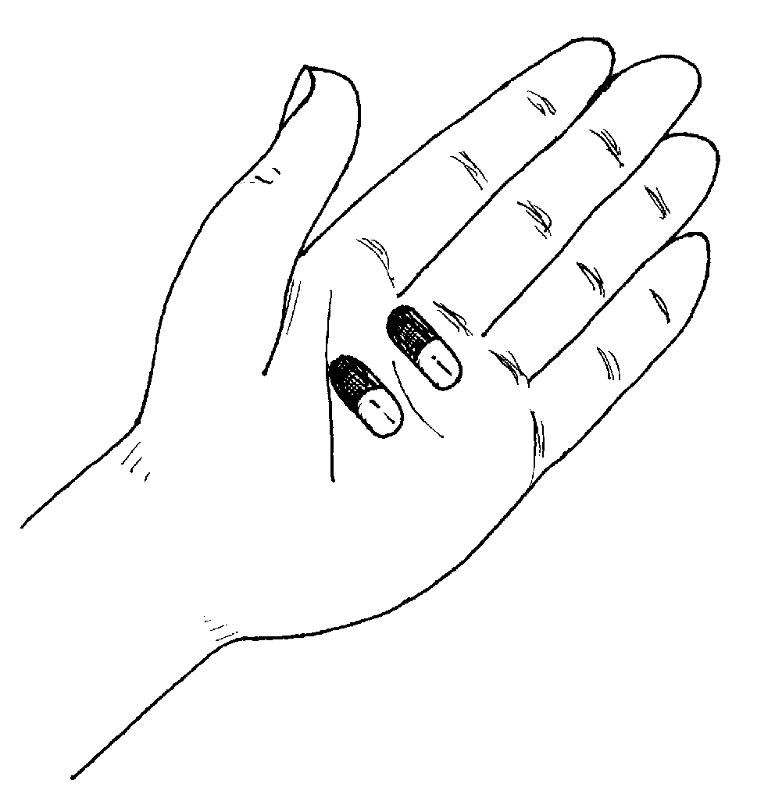
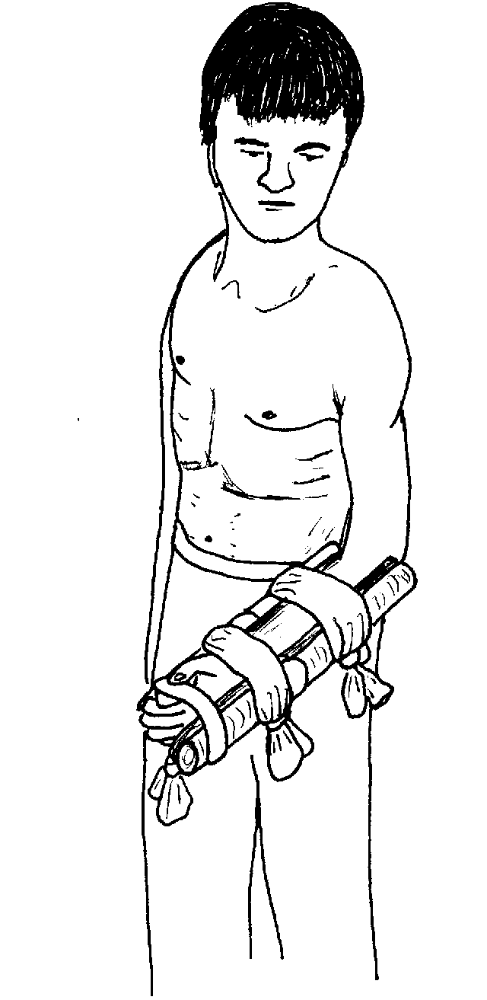
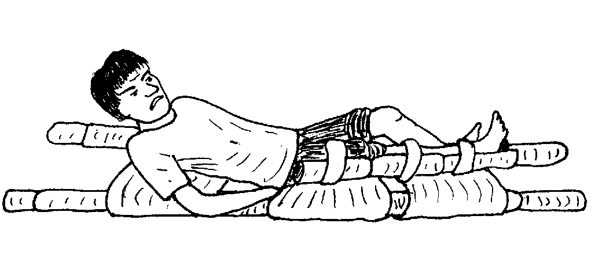
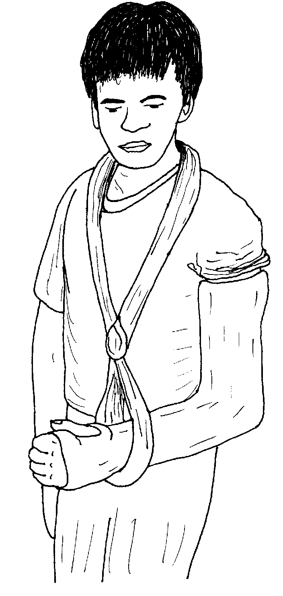

Matigsalug Manobo Healthbooks
Previous Healthbook Up to main Healthbooks page Next Healthbook
Vernacular Lexicon
A
B
BAP
BL
D
E
G
H
I
K
KI
L
LA
LIP
M
N
O
P
PA
R
S
SE
SIN
T
TE
TIN
U
V
W
Y
Z
Healthbooks
Sabekan aldew, impamaneyik si Binuy te beyabas diyet lama ran su egpamupu te behas te beyabas.
Ne ware din de natagtaheyi ne neulug din e diyet tane su nahepu ka indiekan din ne sugpang.

Te pegkareeg din, neutunan din ka belad din, te peg-enew rin e, naheram din ne migmasakit ka belad din. Te pegpitew rin, mania te nahepu e ka belad din.
Indugpu si Binuy te asawa rin te pegkarineg kandin te migpanguleyi.

Naaldek ka asawa rin piru imbulihan din ded si Binuy te miggendiye te baley ni Inuk.
Migsuman-suman ka asawa ni Binuy te si Inuk de ka nakanengneng ke egmenuwen teg bawi ka egkahepu ne belad.
Impitew ni Inuk ka langun ne lawa ni Binuy.
Insuhu ni Inuk ka asawa ni Binuy teg pakuen ke due me peri te kawayan wey ke kayu wey gisi te manggad.
Impitew man-e ni Inuk ka ulu ni Binuy wey ka lieg din wey mig-insaan din ke migmasakit naa ka lieg din wey ka peka rin, wey ke ware din naan e nakamanumanu ne henduen nakapanguleyi.

Ne migtabak si Binuy te ka belad din de ka migmasakit.
Amanan neyingingesa si Inuk te ware ded nareeti ka lieg wey ulu ni Binuy su ke due perem, keilangan ne due-rue eggendiye sikandin te huspital.

Ne migpabulus man-e sikandin ka migkahi te, “Keilangan neg pitawen ta ke due nareetan diyet ulu, lieg wey ke peka ke dueg keulug ne etew.”
Ne migkahi si Binuy te, “Egbuyu a te igbawi ku te migmasakit.” Nataman migbehayan e regma ni Inuk te parasitamul.
Ne migpabulus man-e sikandin ka migkahi te, “Keilangan neg gendiye ka te huspital su eyew egpeiksriyan te duktur ka tul-an nu su eyew eg-ay-ayaran din.
“Keilangan ne due egpakapahen te belad nu su eyew ka nahepu keneg kaweil-weil ne kene amanag kareetan.”
Ne mig-inse si Binuy te, “Egmenuwen naa?”
Ne migkahi si Inuk te, “Emun keg libed e ka asawa nu, henduen pad neg kakita nu keg menuwen.”
Te pegkeuma te asawa ni Binuy ne insuhu ni Inuk, miglabundusan din e teg keteng ka belad ni Binuy.
Ne due-rue ne migtahik din ka belad ni Binuy te kayu eyew igpahen.

Piru te kene pad igparagpi ka kayu wey ke kawayan naa, keilangan neg pariraleman te manggad su eyew keneg masakit keg beleberan.
Ne migkuwa man-e si Inuk te iling te lampin wey impasalulu rin naa ka belad ni Binuy.
Migkahiyan ni Inuk si Binuy te, “Emun ke dueg kahepuan te tul-an, keilangan neg pehuspital.
“Piru meupiya ka keykew su kene ded amanan prublima su egpekeyipanew ke pad.”
Nakapahimun-gimun si Binuy. Kenad amanan masakit ka belad din.
Migkahi si Inuk te, “Emun ke nahepu e degma ka paa nu, keilangan degma neg tahuan ta te kayu wey egbeleberan eyew egkapahen, iling te sika se belad nu wey igpeuyan ka riyet huspital.

“Egkaayun neg lagpuen nu teg belebed ka daruwan paa minsan sabeka re ka nahepu su eyew egkapahen ka dangeb ne paa.”
Miggendiyad ensi Binuy ka alunggun te huspital ka egpapitew te nahepu ne belad din.

Amanag keupian neg tengteng ka me etew te sumintu te belad ni Binuy te peg-uli dan diyet ugpaan dan.
Pegginguma te senge bulan, henduen pad ne mig-awe ka sumintu piru diyet huspital awaa.
Ne ingkahiyan e te duktur si Binuy teg kaayun e neg gamiten din ka belad din piru kene pad te me mabbehat neg gimuwen.
Te ware naluhey, migmanekal e man-e ka belad ni Binuy iling te dengan piru amana rin eg-ayad-ayad keg pamaneyik din te kayu.
Nekey-a ka an-anayan neg pitawen ta ke dueg keulug?
Nekey-a ka huna-a neg gimuwen ta diyet duma ne nahepuan te belad wey ke paa, hendue ne igpeendiye te huspital?
Keg aween e ka simuntu, eggamiten naan e ka nalepuan? Egmenuwen-a?
Egpitawen ke due nareetan diyet ulu, diyet lieg wey peka. Ke due, keilangan ne igpeendiye sikandin te huspital. (Lukib 9)
Keilangan neg kedkeren pad te hinabel duma te kayu wey ke kawayan naa su eyew keneg kaweil-weil. (Lukib 13, 15)
Egkaayun e ne due-rue eggamiten ka nalepuan, piru kene pad te me mabbehat. Piru ke egkaluhey e, egkaayun e neg gamiten minsan mabbehat neg gimuwen. (Lukib 17)
This page last updated: 03-Jan-2020
Copyright © 2009-2010